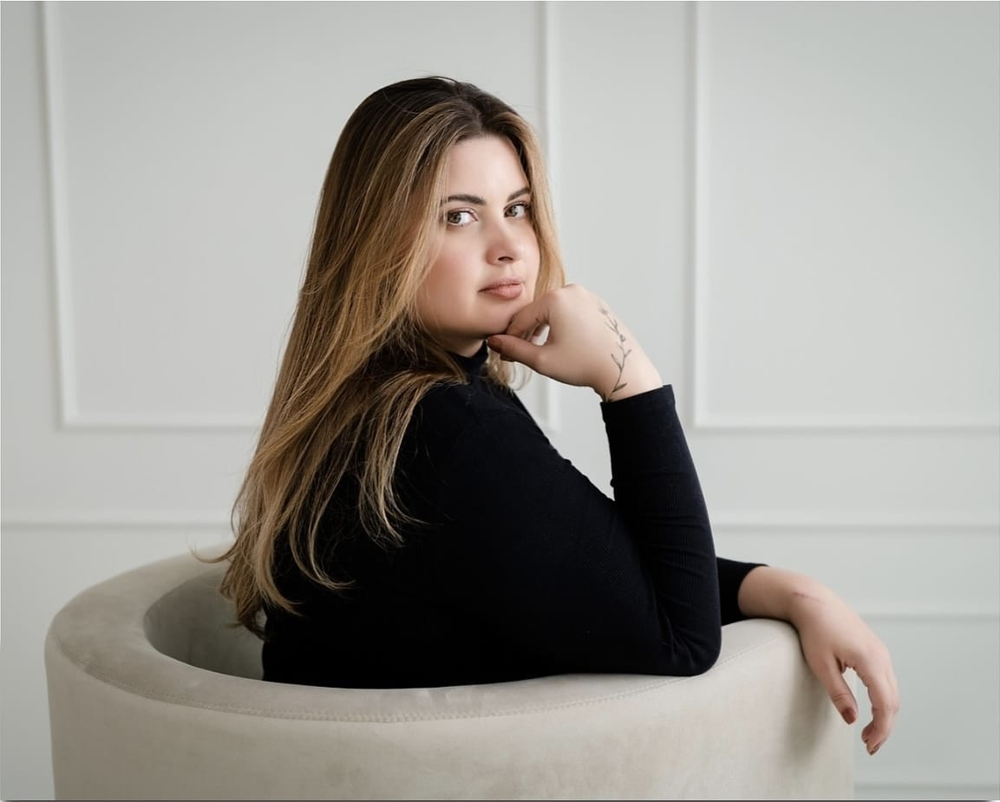

Um Pouco Sobre Mim
A paixão por trás dos pincéis.

Olá, eu sou a Vanessa Berton!
Maquiadora profissional e apaixonada por realçar a beleza que já existe em cada pessoa.
Desde criança, os pincéis e as cores me fascinavam. O que começou como uma brincadeira, se tornou minha grande paixão e profissão. Para mim, a maquiagem é muito mais do que apenas aplicar produtos; é uma forma de arte, uma ferramenta de empoderamento e um meio de expressar a personalidade.
Minha filosofia é simples: acredito em uma beleza autêntica. Trabalho para realçar os traços únicos de cada cliente, garantindo um resultado elegante e sofisticado que reflete quem você é, seja para um evento especial, o dia do seu casamento ou um ensaio fotográfico.
Vamos conversar?